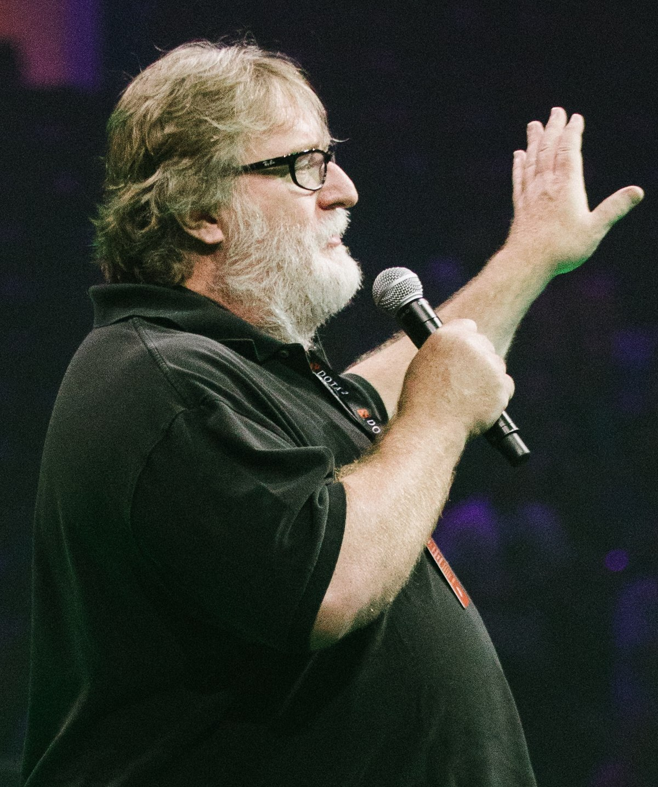

Gabe Logan Newell (Colorado, 3 de novembro de 1962), apelidado de Gaben, é um empresário americano e presidente da empresa de videogames Valve.
Newell nasceu no Colorado e cresceu em Davis, Califórnia. Ele frequentou a Universidade de Harvard no início da década de 1980, mas desistiu para ingressar na Microsoft, onde ajudou a criar as primeiras versões do sistema operacional Windows. Ele e outro funcionário, Mike Harrington, deixaram a Microsoft em 1996 para fundar a Valve, e financiaram o desenvolvimento de seu primeiro jogo, Half-Life (1998). Harrington saiu em 2000, tornando Newell o único proprietário.
